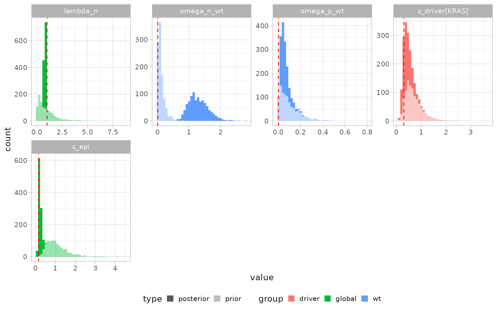

library(PEPI)
library(cmdstanr)
#> This is cmdstanr version 0.8.0
#> - CmdStanR documentation and vignettes: mc-stan.org/cmdstanr
#> - CmdStan path: /home/runner/.cmdstan/cmdstan-2.39.0
#> - CmdStan version: 2.39.0
library(dplyr)
#>
#> Attaching package: 'dplyr'
#> The following objects are masked from 'package:stats':
#>
#> filter, lag
#> The following objects are masked from 'package:base':
#>
#> intersect, setdiff, setequal, union
library(ggplot2)PEPI’s unified model (inst/multirates_positive_s.stan)
jointly infers, from multi-sample VAF-derived CCF data collected at
several sampling times:
- the base growth rate
lambda_nand epigenetic fitnesss_epiof a wild-type (“wt”) background population switching between “-” and “+” epistates at ratesomega_n_wt/omega_p_wt; - any number of driver clades (their own fitness
s_driverand switch rates), driver-only clades confined to a single epistate (driver_n/driver_p), and driver+clade combos (dc, a driver acquisition followed by a further epimutation-switch event); and -
wt-background clades (
clades_wt), sub-lineages of the wt population tracked for their own epistate composition.
Simulate a synthetic dataset
We simulate one driver clade and one wt-background clade, both
acquired before the first sampling time, and observed at three time
points. Data are generated with the same deterministic growth/switch ODE
the Stan model itself assumes as its likelihood mean; kappa
is kept modest here so the simulated CCF/fraction noise is not
razor-sharp, which keeps the model’s default initialization well-behaved
for this small illustrative dataset.
set.seed(1908)
sim = simulate_multirates_tree(
sampling_times = c(3, 6, 9),
tmrca = 1, t_min = 0,
lambda_n = 1, s_epi = 0.15,
omega_n_wt = 5e-3, omega_p_wt = 2e-3,
drivers = list(
list(id = "KRAS", t_driver = 2, s_driver = 0.3,
omega_n_driver = 5e-3, omega_p_driver = 2e-3,
ms_driver = -0.5, sigma_driver = 0.5,
alpha_n_driver = 1, beta_n_driver = 10,
alpha_p_driver = 1, beta_p_driver = 10)
),
clades_wt = list(
list(id = "c1", t_clade_wt = 1.5)
),
mu = 1e-7, l = 2.7e9, kappa = 20, sigma_count = 0.1,
seed = 42
)
sim$tables$population_sizes
#> # A tibble: 3 × 4
#> time type zminus zplus
#> <dbl> <chr> <dbl> <dbl>
#> 1 3 sampling 26.2 0.169
#> 2 6 sampling 433. 9.06
#> 3 9 sampling 9546. 357.
sim$tables$driver_muts
#> # A tibble: 1 × 8
#> driver_id m_driver ms_driver sigma_driver alpha_n_driver beta_n_driver
#> <chr> <int> <dbl> <dbl> <dbl> <dbl>
#> 1 KRAS 1075 -0.5 0.5 1 10
#> # ℹ 2 more variables: alpha_p_driver <dbl>, beta_p_driver <dbl>
sim$tables$driver_ccf
#> # A tibble: 6 × 4
#> driver_id time epistate ccf
#> <chr> <dbl> <chr> <dbl>
#> 1 KRAS 3 - 0.227
#> 2 KRAS 3 + 0.0155
#> 3 KRAS 6 - 0.241
#> 4 KRAS 6 + 0.0460
#> 5 KRAS 9 - 0.147
#> 6 KRAS 9 + 0.130
sim$truth
#> $lambda_n
#> [1] 1
#>
#> $s_epi
#> [1] 0.15
#>
#> $omega_n_wt
#> [1] 0.005
#>
#> $omega_p_wt
#> [1] 0.002
#>
#> $tmrca
#> [1] 1
#>
#> $t_min
#> [1] 0
#>
#> $m_trunk
#> [1] 1081
#>
#> $s_driver
#> KRAS
#> 0.3
#>
#> $s_driver_n
#> named list()
#>
#> $s_driver_p
#> named list()
#>
#> $s_dc
#> named list()Fit the model
x = init_multirates(sim$tables, m_trunk = sim$truth$m_trunk)
x = fit_multirates(x, cmdstan_path = cmdstanr::cmdstan_path(),
method = "variational", ndraws = 1000, seed = 45,
mu = 1e-7, l = 2.7e9, t_min = 0,
ms_epi = 0, sigma_epi = 0.5,
alpha_lambda = 1, beta_lambda = 1,
alpha_n_wt = 1, beta_n_wt = 10, alpha_p_wt = 1, beta_p_wt = 10,
min_kappa = 5, max_kappa = 200,
min_sigma_count = 0.01, max_sigma_count = 1)
#> CmdStan path set to: /home/runner/.cmdstan/cmdstan-2.39.0
#> Init values were only set for a subset of parameters.
#> Missing init values for the following parameters:
#> lambda_n, s_epi, omega_p_wt, omega_n_wt, bc_wt, U_wt, W_wt, bc_clade_wt, s_driver, bc_driver, U_driver, W_driver, s_driver_n, t_driver_n, bc_driver_n, s_driver_p, t_driver_p, bc_driver_p, s_dc, delta_t_dc, bc_driver_dc, bc_clade_dc, U_dc, W_dc, omega_p_dc, omega_n_dc, omega_p_driver, omega_n_driver, kappa, sigma_count
#>
#> To disable this message use options(cmdstanr_warn_inits = FALSE).
#> ------------------------------------------------------------
#> EXPERIMENTAL ALGORITHM:
#> This procedure has not been thoroughly tested and may be unstable
#> or buggy. The interface is subject to change.
#> ------------------------------------------------------------
#> Rejecting initial value:
#> Error evaluating the log probability at the initial value.
#> Exception: lub_constrain: lb is 4.87392, but must be less than 3.000000 (in '/tmp/Rtmp3MQ6OR/model-1e945193d9be.stan', line 353, column 2 to column 81)
#> Rejecting initial value:
#> Error evaluating the log probability at the initial value.
#> Exception: lub_constrain: lb is 5.59741, but must be less than 3.000000 (in '/tmp/Rtmp3MQ6OR/model-1e945193d9be.stan', line 353, column 2 to column 81)
#> Rejecting initial value:
#> Error evaluating the log probability at the initial value.
#> Exception: lub_constrain: lb is 6.88754, but must be less than 3.000000 (in '/tmp/Rtmp3MQ6OR/model-1e945193d9be.stan', line 353, column 2 to column 81)
#> Gradient evaluation took 7.1e-05 seconds
#> 1000 transitions using 10 leapfrog steps per transition would take 0.71 seconds.
#> Adjust your expectations accordingly!
#> Begin eta adaptation.
#> Iteration: 1 / 250 [ 0%] (Adaptation)
#> Iteration: 50 / 250 [ 20%] (Adaptation)
#> Iteration: 100 / 250 [ 40%] (Adaptation)
#> Iteration: 150 / 250 [ 60%] (Adaptation)
#> Iteration: 200 / 250 [ 80%] (Adaptation)
#> Iteration: 250 / 250 [100%] (Adaptation)
#> Success! Found best value [eta = 0.1].
#> Begin stochastic gradient ascent.
#> iter ELBO delta_ELBO_mean delta_ELBO_med notes
#> 100 -4217.949 1.000 1.000
#> 200 -806.620 2.615 4.229
#> 300 -315.630 2.262 1.556
#> 400 -212.549 1.817 1.556
#> 500 -161.714 1.517 1.000
#> 600 -126.474 1.310 1.000
#> 700 -90.461 1.180 0.485
#> 800 -78.260 1.052 0.485
#> 900 -74.109 0.941 0.398
#> 1000 -67.179 0.858 0.398
#> 1100 -62.939 0.764 0.314 MAY BE DIVERGING... INSPECT ELBO
#> 1200 -58.695 0.349 0.279
#> 1300 -57.094 0.196 0.156
#> 1400 -55.924 0.149 0.103
#> 1500 -54.715 0.120 0.072
#> 1600 -53.765 0.094 0.067
#> 1700 -53.733 0.054 0.056
#> 1800 -52.085 0.042 0.032
#> 1900 -51.622 0.037 0.028
#> 2000 -50.928 0.028 0.022
#> 2100 -51.332 0.022 0.021
#> 2200 -51.179 0.015 0.018
#> 2300 -51.188 0.013 0.014
#> 2400 -50.887 0.011 0.009 MEDIAN ELBO CONVERGED
#> Drawing a sample of size 1000 from the approximate posterior...
#> COMPLETED.
#> Finished in 0.3 seconds.Extract the posterior
x = get_posterior_multirates(x)
x$posterior$multirates
#> # A tibble: 80,000 × 14
#> type family group id sampling_time epistate event quantity base variable
#> <chr> <chr> <chr> <chr> <dbl> <chr> <int> <chr> <chr> <chr>
#> 1 post… param clad… c1 NA NA NA NA bc_c… bc_clad…
#> 2 post… param clad… c1 NA NA NA NA bc_c… bc_clad…
#> 3 post… param clad… c1 NA NA NA NA bc_c… bc_clad…
#> 4 post… param clad… c1 NA NA NA NA bc_c… bc_clad…
#> 5 post… param clad… c1 NA NA NA NA bc_c… bc_clad…
#> 6 post… param clad… c1 NA NA NA NA bc_c… bc_clad…
#> 7 post… param clad… c1 NA NA NA NA bc_c… bc_clad…
#> 8 post… param clad… c1 NA NA NA NA bc_c… bc_clad…
#> 9 post… param clad… c1 NA NA NA NA bc_c… bc_clad…
#> 10 post… param clad… c1 NA NA NA NA bc_c… bc_clad…
#> # ℹ 79,990 more rows
#> # ℹ 4 more variables: .chain <int>, .iteration <int>, .draw <int>, value <dbl>Posterior vs prior, and ground-truth recovery
plot_inference(x, params = c("lambda_n","s_epi","s_driver","omega_n_wt","omega_p_wt")) +
geom_vline(
data = data.frame(
facet = c("lambda_n","s_epi","omega_n_wt","omega_p_wt","s_driver[KRAS]"),
truth = c(sim$truth$lambda_n, sim$truth$s_epi, sim$truth$omega_n_wt,
sim$truth$omega_p_wt, sim$truth$s_driver[["KRAS"]])
),
aes(xintercept = truth), linetype = "dashed", color = "red"
)
The dashed red lines mark the ground-truth values used to simulate the data; posterior histograms should bracket them.